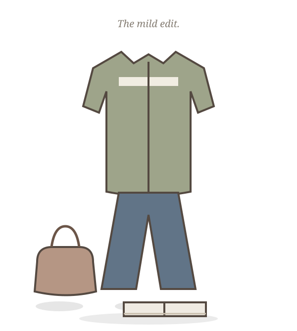

Layers in motion.
Temperature decides whether the outfit needs heavier structure, everyday layers or airy warm-weather pieces.
AN INTERACTIVE STYLE FORECAST
Pick a city and let live weather conditions shape the look. Temperature, precipitation and wind work together with your selected gender and occasion to generate the outfit response.
CURRENT CONDITIONS, NOT A GENERIC SEASONAL FORECAST.

YOUR RECOMMENDED LOOK
Your outfit will appear as soon as live weather data arrives.
CHOOSE A GENDER
CHOOSE YOUR OCCASION
Recommendations update with the forecast.
Choose a city, gender and occasion, then watch your style edit adapt.
Temperature decides whether the outfit needs heavier structure, everyday layers or airy warm-weather pieces.
Rain or snow changes the accessory suggestion so the outfit responds to the sky, not only the temperature.
Wind changes the styling note and reinforces when more secure layering makes sense.
04 / THE IDEA
Weather to Wear turns live numbers into a fashion response. The forecast does not simply appear as text — it selects an outfit illustration, changes the colour atmosphere, and rewrites styling advice based on city, weather, gender and occasion.
DATA SOURCE: OPEN-METEO WEATHER API ↗ · Forecast-model conditions, not an on-site thermometer. Recommendations are creative styling ideas.